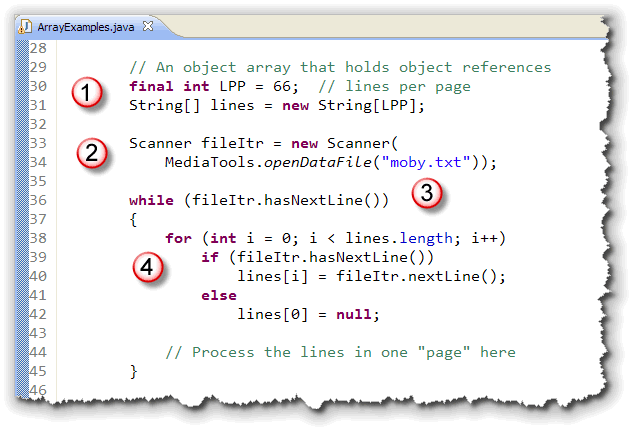
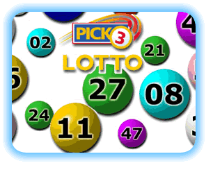
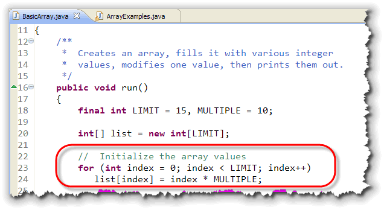
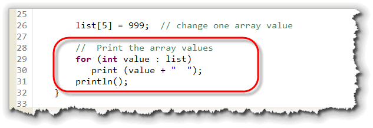
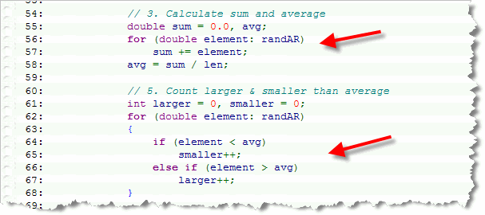
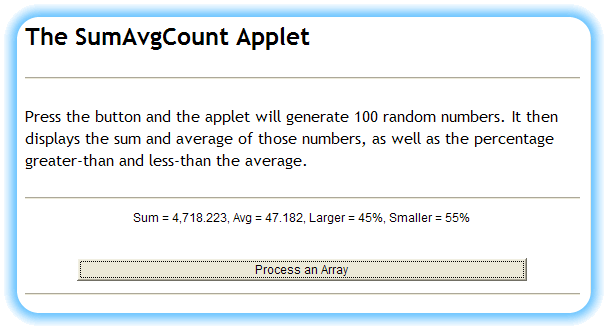
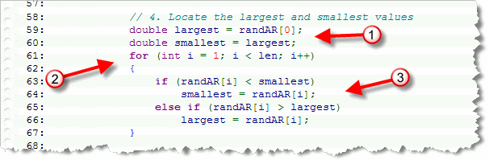
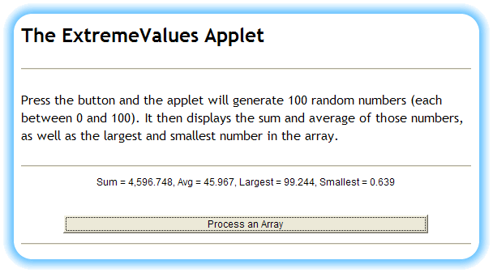

Loop Guru, the album by Duniya, features "Nearly 69 minutes of infectious electronic rhythms ranging from wirly dance grooves to worldly atmospheric shivers that take us from the dance floor to the chill room".
Whatever; I just like the name of the album.
In this lesson we'll take a look at various ways that we can process arrays, many of them designed to turn you into a real loop guru. We'll look at:
- Algorithms that process and modify the elements of an entire array, such as initialization.
- Read-only algorithms that can make use of Java's foreach loop syntax for visiting each array element.
- Algorithms that process a portion of an array by using sentinel loops.
- Algorithms that modify a portion of an array by inserting or deleting elements.
Let's start by learning about the algorithms that process an entire array, and that may, (or may not) modify the array elements. This includes operations like initialization, sorting, and reversing the elements in an array, (something you'll need to do for the exercises).
Using Loops to Process Arrays
The real advantage of arrays, is that they allow you to apply the same processing to all of the elements by using a loop. We can divide this processing into two kinds:
- Algorithms that may modify the elements of the array as they are processed. This includes initialization, sorting, and otherwise rearranging items. It also includes algorithms where the position of the elements in the array is significant or must be noted.
- Algorithms that need only to read the values contained in the array. These algorithms solve many counting and calculating problems.
We'll use different kinds of loops for both types of algorithms,
although you can use the modifying for loop
on the read-only calculation problems as well.
Modifying Array Loops
For array processing, where the elements may be modified, or where
the positions of the elements is important, the for loop
is the loop of choice, because the array.length
field creates a natural count bounds, and because the loop
index can be used as the subscript to access the array elements.
Here are a few examples of common loops and the situation where you'll use them.
Initializing an Array
If you need to initialize an array to a value other than zero,
the initializer list is useful only for short arrays. Typing in
even 25 or 50 values can get very tedious. Instead, you should
use a for loop that follows this pattern:
- Retrieve the length of the array and use it as the loop's count bounds.
- Write a
forloop that goes from 0 to less-than the count bounds. - Assign a new value to each element that you wish to modify inside the loop body.
This idiom or pattern is the standard way to process an array when you want to visit every element, and you need to modify the contents of the elements, or some of the elements. Here's an example that uses this pattern to fill an array with random numbers:
// Initializing a Random Array
// randNums is a double array
int len = randNums.length;
for (int idx = 0; idx < len; idx++)
{
randNums[idx] = Math.random() * len;
}
Initializing a String Array
When you create an object or String array using the
new operator, all of the elements in the array contain
the null String, not the empty String.
Before you can use any of those array elements, you'll need to intitialize them.
Let's look at an example that shows how you'd initialize an array
containing a "page" worth of the text from the book Moby Dick.

Here's are the things you should notice:- Lines 30 and 31 create the
Stringarraylinesusing the constantLPP, which stands for lines per page. Since you don't know how many lines the file contains, you can't create an array big enough to hold the entire book. Notice that line 31 uses a single line to both declare the array variable and to instantiate, as you saw in the last lesson. - Lines 32 and 33 create a
Scannervariable that will iterate over the text file, Moby Dick. As you saw in the last unit, you can use the ACMMediaToolsclass to open the data file that is then passed to theScannerconstructor. - Iterators use the
hasNext()group of methods to control their operators. You're going to process the file, line by line, so you'll use thehasNextLine()version one line 36 as the outer loop controller. Even though you're going to process the file page by page, this loop will make sure that you process the entire file. - The inner
forloop on line 38 makes sure that you process the entire array. It's important that every element in the array is initialized, becuase you don't want any data from the previous page to remain when you process the next one. Because you need to access every element, theforloop, along with thelengthfield, are the obvious choices.
Inside the inner loop, it's possible to reach the end of the
file. That means you need to use if statements to
check the end-of-file status again, before retrieving the current
line from the file and storing it in the appropriate array element.
If you do run out of data in the file, you still need to process
the remaining data elements in the lines array, filling
them with null to "erase" any data left from the last page.
Moving Array Elements
Array elements often need to be rearranged for a variety of reasons.
You may want to sort the names in a list, randomly shuffle the cards
in a deck, or reverse the characters in a String. All of
these require you to process all of the elements in the array,
(often more than once), and modify or move the elements.

Let's look at an interesting problem: suppose you have a big glass globe filled with 50 "lotto" balls. Each ball is numbered. You want to pick three of the balls for a lottery game called "Pick 3 Lotto".- The numbers have to be randomly selected between 1 and 50 (inclusive)
- No number can appear twice
You'll probably be tempted to start with some code like this:
int n1 = 1 + (int)(Math.random() * 50);
int n2 = 1 + (int)(Math.random() * 50);
int n3 = 1 + (int)(Math.random() * 50);
Unfortunately, this generates duplicates, (that is, 2 of the 3 numbers will be the same), about 8% of the time, which is an impossibility in the game you're trying to simulate. (That's also why you can't use this method for selecting cards from a deck of cards for your new Video Poker game; you always end up with two Ace of Spades at the most inconvenient times!)
Instead, the best way to solve this problem is to put all of the lottery balls (numbers) in an array, shuffle the array, and then pick the first three elements. That way, a single ball can never be picked twice.
Which brings us to the question: how do you shuffle the numbers in a list, given this definition and initialization:
int lotteryBalls[] = new int[50];
for (int i = 0; i < 50; i++)
lotteryBalls[i] = i + 1;
The Shuffle Algorithm
To shuffle the elements in the array, you:
- loop through the entire array.
- use your random number generator to pick one index from the array.
- "swap" the value at the loop index with the value at the random index.
Here's what the "shuffle" algorithm looks like in code:
for (int i = 0; i < 50; i++)
{
int j = (int)(Math.random() * 50);
int temp = lotteryBalls[j];
lotteryBalls[j] = lotteryBalls[i];
lotteryBalls[i] = temp;
}
The "swap" Pattern
One common coding pattern that you should learn and remember it
the code for "swapping" two values, since it occurs regularly
in computer programs, and its one algorithm that students often
do incorrectly. To swap two values you:
a. create a temporary variable and save the value in
the first variable in the temporary.
b. use assignment to copy the second variable's value into
the first variable.
c. use assignment to copy the temporary value into the second
variable.
Note that after step b is completed, both variables have the same
value, which is why the temporary variable is required. Without the temporary
variable, the value in the first variable gets lost, and both end up
the same.
A Better Shuffle
The problem with the shuffle algorithm that I just showed you is that it really isn't random. Different numbers have higher probablilities of showing up, than other numbers. That's because whenever you exchange an element with another, you also have a chance of exchanging with elements that have already been shuffled.
A better algorithm, known as the Fisher-Yates or Knuth shuffle, works like this:
- Take the last ball in the array (or card in the deck), and exchange it with any other ball. After this exchange, this ball will never be swapped again. It will also be guaranteed not to be itself.
- Then, take the next-to-last ball, and exchange it with any of the remaining un-shuffled ball.
Continue on until the first ball has been swapped. Here's what this version of the shuffle algorithm looks like in code:
for (int i = 50; i > 0; i--)
{
int j = (int)(Math.random() * i);
int temp = lotteryBalls[j];
lotteryBalls[j] = lotteryBalls[i];
lotteryBalls[i] = temp;
}
The main difference are that the loop counts down from 50 to 0 and that the random ball is selected only from the remaining balls, instead of being selected from all of the elements.
Non-Modifying Algorithms
In Java 5, a simplified form of the for loop was introduced,
known as the foreach loop (even though it doesn't actually use
the word foreach). The foreach loop is used when:
- You want to visit every element in the array (like the
forloop from the previous section.) - You don't need to modify any of the elements or use the loop counter as part of your calculation.
You can think of the foreach loop as a read-only version
of the for loop. Here's the syntax of the foreach loop used to process the array
randNums, created in the last section:
// Using a "foreach" loop
for(double num : randNums)
System.out.print(num + " ");
This is similar to the loop:
// An equivalent for loop
for (int i = 0; i < randNums.length; i++)
{
double num = randNums[i];
System.out.print(num + " ");
}
Note: because the iterator variable (num
in our example shown here) is a copy of the individual array elements, you
can't change the elements of an array using the foreach loop.
Think of foreach as a read-only for loop with
slightly simplified syntax. You can always replace it with the
traditional for loop used in the first section, and you
should if you're going to run your program on a pre-Java 5
platform.
BasicArray
The simple program
BasicArray.java shows the application
of both of these loops. On lines 23-24 a conventional for
loop is used to initialize all of the elements in the array:

After the array elements are initialized, the sixth element (list[5])
is changed to 999, and the foreach syntax is used to display all of
the elements in the array on lines 29-30:

Let's look at some other algorithms where the foreach loop could be used. (That is, where we a) need to process the entire array, and b) won't be changing any elements.)
Summing, Counting, and Averaging
Summing, counting, and averaging are all common operations performed on arrays. Here's are two loops from a Java applet named SumAvgCount that you can use as examples when you have to perform these operations:

Try it yourself. Run the applet by clicking the link in this sentence. Then, press the button and the applet will initialize therandAR array using Math.random() and a traditional
for loop. (Not shown here.)
The second loop, (the first shown at the top of this screenshot), uses the
foreach version of the for loop to sum up all of
the elements, and then the average is calculated. The final loop,
(shown at the bottom of the screenshot), also uses foreach
to calculate the percentage of numbers
that are larger than, and the percentage of numbers that
are smaller than the average.
If you don't want to run the program, here's what it looks like, just to give you an idea:

Smallest and Largest: Extreme Values
The SumAvgCount program counts the number of values that are larger than the average, and those that are smaller than the average, and then displays the percentage. Of course, that's kind of a silly statistic, because, by definition, it's always going to be close to 50%; that's how an average is calculated.
A better use of our time is to find the largest and smallest input values, a process known as locating extreme values, (probably not as exciting as the extreme sports shown in these postcards):
Here's the third loop in this program, (which is identical to SumAvgCount up to this point):

Here's how the code works:- First, initialize two variables, and initialize them so that they point to the first element in the array. If the array has only a single element, then it is both the largest and smallest element in the array.
- Since we've already handled the first element, our
loop starts counting at the second, with an index value of 1.
As before, we go up to the end of the array, the
value stored in
len. - As we visit each element, we compare it to the
values stored in
largerandsmaller, and reset the variables if required. Because both variables are initially set to the same value, we can use anelse ifstatement here, rather than the independentifstatements that would be required if we had used very large or very small initial values instead.
Once we're done, we can run the program, and get this output:

Coming Up...
In this lesson you learned how to use loops to process
arrays. You began by learning how to write algorithms that
modify the array, using the for loop to
initialize and to move the elements in an array.
Then, you learned how to write some non-modifying algorithms, including those that count, sum, average, and find the extreme values in an array. To do this, you made use of Java's new foreach loop.
Now that you know how to process arrays using loops, let's package those algorithms up into procedures and functions: the topics of the next lesson.